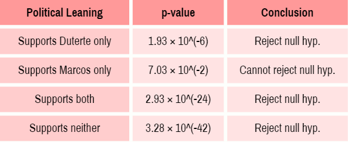

We wanted to see if our data revealed any patterns, so we utilized the plotly library to create interactive charts. Of the charts we made, we're sharing our most insightful graphs here.
We plotted the dates posted of our tweets to see if there were any hotspots in dates that we could attribute to certain events. The greatest number of redtagging tweets were found during following quarters: Q2 2020, Q2 2022, and Q1 2022.
Though the scope is limited to the 252 tweets that were collected by the researchers, which could have been affected by any biases introduced by Twitter's search algorithm, the surge in numbers coincides with three major events:
- 2nd Quarter of 2020: The first few months of the COVID-19 pandemic lockdown
- 2nd Quarter of 2022: The 2022 Presidential Elections
- 1st Quarter of 2022: Campaign Period for the 2022 Presidential Elections
We found that, of our 252 tweets, the majority of the tweets - 45.6% - supported neither Marcos nor Duterte. The next most common stance was to support both Marcos and Duterte, which comprised 40.1% of the tweets. This number combines all types of tweets together, so we decided to group the tweets further depending on the content of the tweet.
When divided by whether or not the tweet contained red-tagging, we found that of the 131 red-tagging tweets, 70.23% of the tweeters were supporters of both Marcos and Duterte. On the other hand, of 121 non-red-tagging tweets, 90.08% were tweeted by supporters of neither. Notably, the accounts that support neither include official Anakbayan accounts and accounts of Anakbayan members.
99.07% of non-negative tweets were tweeted by supporters of neither. There is only one neutral tweet tweeted by a supporter of both; all the remaining tweets are negative. 69.44% of negative tweets were tweeted by supporters of both.

The results above show that we can reject the null hypothesis for those that support Duterte only, those that support both Marcos and Duterte, and those that support neither. This means that both Duterte-only and Marcos-Duterte supporters are highly likely to red-tag Anakbayan, while supporters of neither are highly unlikely to do so. As for those who support Marcos only, we weren't able to obtain a statistically significant result, likely because the dataset contained only 10 samples from Marcos-only supporters.